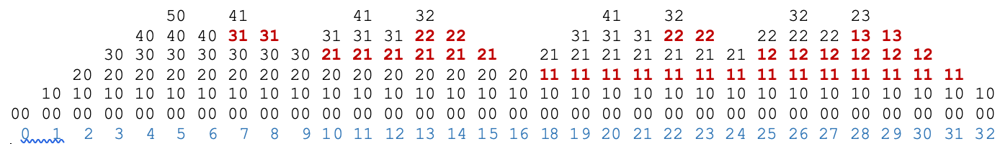

Backtracking
Backtracking is a technique for recursively solving a problem by choosing one possible solution but then removing that choice (this is the backtracking) and trying another if it doesn't work. There are more general definition, but this definition is suitable for us here.
Developing a recursive function
 We begin by developing a surprisingly short and simple recursive function to determine whether the values in an integer array can be placed into two bags so that the sums of the values in the two bags are equal. Two examples: For the array {2, 2}, put the first 2 in one bag and the second 2 in another; the answer is yes. For the array {1, 1, 1}, the answer is no. DevelopFunctionSplit.pdf.
We begin by developing a surprisingly short and simple recursive function to determine whether the values in an integer array can be placed into two bags so that the sums of the values in the two bags are equal. Two examples: For the array {2, 2}, put the first 2 in one bag and the second 2 in another; the answer is yes. For the array {1, 1, 1}, the answer is no. DevelopFunctionSplit.pdf.
How execution of this function backtracks
In developing function split,
we did not think at all about how its execution proceeds and how many recursive calls would be made. This
video shows how execution does a lot of backtracking, so much so that for an array of size n,
the maximum depth of recursion is
n but O(2^n) calls are made! It's an exponential algorithm in the worst case ---when bags with equal sums cannot be constructed. Execute a call.pdf. DemoBackTrack.zip
The image below shows how the call stack changes during execution of a call split(b, 0, 0, 0) where b is {1, 1, 1, 1, 1}. Shown in each call frame is only (1) the sum of the values in the first bag and (2) the sum of the values in the second bag. Look at columns 6 and 7. In column 6, the top stack element was just popped, and the first call on split returned false. Column 7 then shows the second call on split ---the second call is always shown in red--- with the newly pushed frame on top of it.
From columns 13-16, the frame containing 32 is popped. Then the frame containing 22 is popped ---more backtracking---. Then the frame containing 21 is popped.
This is one-half of the sequence of call stacks to determine whether {1, 1, 1, 1, 1} can be split into two bags whose sums are the same. Next, the 10 in column 32 wll be changed into a red 01 and the process will continue.
